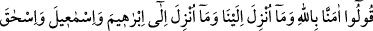
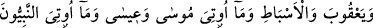
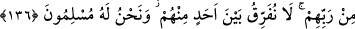

üstünüdür. Kitabımız Tevrât kitapların en iyisidir, dînimiz ise dinlerin en
mükemmelidir.” deyip Îsâ (a.s.)’ın peygamberliğini ve İncil’i, Muhammed (s.a.)’in
peygamberliğini ve Kur’ân’ı inkâr ettiler.
Hıristiyanlar ise: “Hıristiyan olunuz. Çünkü peygamberimiz Îsâ, peygamberlerin en
üstünüdür, kitabımız İncil kitapların en iyisidir, dînimiz dinlerin en mükemmelidir.”
diyerek, Mûsâ (a.s.)’ı ve Tevrât’ı, Muhammed (s.a.)’ı ve Kur’ân’ı inkâr ettiler.
Ey Muhammed! Onların dâvetini red ve doğru yolu açıklamak üzere de ki: “Sizin
dediğiniz gibi olmayız. Tersine “Hanîf” olan İbrâhîm’in milletine ve dinine uyarız.” “O
hanifti, çünkü her bâtıl dîni bırakır, hak dine yönelirdi. Bu açıdan o Yahûdîlik’ten de,
Hıristiyanlık’tan da uzaktır.
“O müşriklerden de değildi.” Âyette dolaylı olarak Yahûdî ve Hıristiyanlar’ın
İbrâhîm’in dinine uyma iddialarının tutarsız olduğu ifâde edilmiştir. Zirâ Yahûdîler:
“Üzeyr, Allah’ın oğludur” sözleriyle, Hıristiyanlar ise: “Îsâ, Allah’ın oğludur.”
sözleriyle Allah’a ortak koşmuşlardı. Hz. İbrâhîm müşrik olmadığına göre, demek ki
ona uymamışlardır. Burada Peygamber (s.a.), ashâbı ve tâbiînin uyduğu din olan
İbrâhîm’in dinine uymaya da teşvik vardır.
136. “Biz, Allah’a ve bize indirilene; İbrâhîm, İsmâîl, İshâk, Ya’kûb ve esbâta
indirilene, Mûsâ ve Îsâ’ya verilenlerle Rableri tarafından diğer peygamberlere
verilenlere, onlardan hiçbiri arasında fark gözetmeksizin inandık ve biz sadece
Allah’a teslim olduk” deyin.
Ey mü’minler deyiniz ki: “Allah’ın birliğine, Peygamberimiz (s.a.)’e indirilen
Kur’ân’a, -ki peygamberlere indirme ümmetine indirme gibidir, çünkü indirilen, herkes
için bağlayıcıdır- İbrâhîm (a.s.)’a indirilen on suhufa; İsmâîl, İshâk ve Ya’kûb’la onun
on iki oğluna indirilene inandık.” Ya’kûb’un oğulları arasında peygamberler vardı.
Sahifeler her ne kadar İbrâhîm (a.s.)’a indirilmiş ise de ondan sonrakiler onlardaki
bilgiler ışığında ibâdet ediyorlar, hükümlerinden de sorumlu bulunuyorlardı. Nasıl
Kur’ân, bize indirilmiş gibi kabûl edilmiş ve biz de sorumlu tutulmuş isek sahifeler de
onlara indirilmiş gibi kabûl edilmiştir. Ya’kûb’un oğulları “sibt” diye
isimlendirilmiştir. “Sibt” aslında dalları olan tek bir ağaç anlamındadır.
Ya’kûboğulları’nın her birinden birçok nesiller ürediği için bu ismi almışlardır.
İsrâîloğulları’nda “sibt” Araplar’daki kabîle gibidir.
“Ayrıca biz, Mûsâ’ya indirilen Tevrât’a ve Îsâ’ya verilen İncîl’e de inanırız.” Konu,